Módulo Estágio Probatório
O estágio probatório é uma avaliação que o servidor de cargo efetivo se submete para verificar se ele merece ou não se estabilizar no serviço público. Normalmente, ele é avaliado quanto a sua assiduidade, pontualidade, responsabilidade, iniciativa para exercer as atribuições do cargo e etc..
O estágio probatório e a estabilidade são institutos jurídicos distintos. A estabilidade é um direito constitucional para quem possui cargo público efetivo (art. 41 da CR/88) e será adquirida após 3 anos de efetivo exercício. A aprovação no estágio probatório é um dos requisitos para aquisição da estabilidade, não se confundindo os institutos.
Cabe cada entidade federativa (União, Estados, Distrito Federal e Municípios) legislar sobre o estágio probatório dos seus respectivos servidores por determinação do art. 18 da Constituição da República, bem como, como regra, qualquer assunto de matéria administrativa.
Assim, a União pode estabelecer, através de lei, regras administrativas diferentes dos Estados. Os Municípios podem estabelecer regras distintas dos Estados, Distrito Federal ou União.
Por isso, o prazo de duração do estágio probatório pode variar de ente federativo para ente federativo. Por exemplo, na União a duração do estágio probatório é de 2 (dois) anos, conforme disciplina o art. 20 da lei 8.112/90, e o estágio probatório do polícia civil do Rio de Janeiro é de 2 anos e 6 meses (art. 19 da lei estadual 3.586/2001). Em relação à União esse prazo é bastante discutível. A discussão para pela idéia do prazo ser de 2 anos ou 3 anos. O Superior Tribunal de Justiça (STJ), reiteradamente, vem decidindo corretamente que a duração do estágio probatório é de 2 anos na União, conforme previsão do art. 20 da lei 8.112/90. Cabe ao STJ julgar em última análise no Brasil sobre esse prazo, por ser lei federal (art. 105, III, "a" da CR/88).
Superada essa etapa relativa à duração do estágio probatório, passo analisar os seus efeitos.
O servidor que não aprovado no estágio probatório deverá ser exonerado em decorrência do princípio constitucional da eficiência, caso ele demonstre inaptidão para exercer as atribuições do cargo.
Para que essa exoneração ocorra, deverá a Administração Pública, pouco importando se o servidor é federal, distrital, estadual ou municipal, observar os seguintes requisitos:
1) Contraditório e a ampla defesa, através de um processo administrativo (art. 5º, LV da CR/88);
2) princípio da motivação.
O servidor que tiver uma avaliação insatisfatória no estágio probatório não poderá ser exonerado automaticamente. O mesmo tem o direito constitucional do contraditório e da ampla defesa, através da existência de um processo administrativo. Tal direito visa afastar avaliações mentirosas e perseguições funcionais e reduzir o arbítrio da autoridade, sendo, portanto, o limite da discricionariedade administrativa e o abuso de poder.
Cadastro do(s) estágio(s) probatório(s) que o órgão utilizar, visto que pode haver mais de um estágio cadastrado, por exemplo pode haver pontuação diferente ou questões diferenciadas para professores e demais funcionários.
Aba Estágio
Sequencial: Campo preenchido automaticamente pelo sistema.
Lei: Lei ou decreto que define como será o método de avalição utilizado do estágio probatório, ou seja, qual a periodicidade da avaliação, a pontução dos quesitos, etc.
Descrição: Descrição da avaliação.
Observação: Observação sobre o estágio probatório, pode ser utilizado para colocar as características de avaliação do estágio.
Conf. Obs: local onde configuramos onde será digitado e impresso as observações das avaliações:
Ambos: será solicitado uma observação a cada questão do estágio e também no quesito;
Pergunta: o observação será digitada e impressa somente na questão (pergunta);
Quesito: a observação será digitada e impressa somente no quesito.
Mínimo de Pontos: mínimo de pontos para passar automáticamente no estágio probatório. O sistema utilizará o valor deste campo para saber se o servidor passou ou não no estágio probatório.
Portaria Aprovação: qual é o modelo de portaria que será impresso quando terminado o estágio probatório do funcionário desde que o mesmo tenha passado.
Portaria Reprovação: qual o modelo de portaria que será impresso caso o servidor não tenha passado no estágio.
Ambos os modelos de portaria têm que serem configurados no módulo de Recursos Humanos.
Duração do Estágio: Qual o tempo , em anos, de duração do estágio.
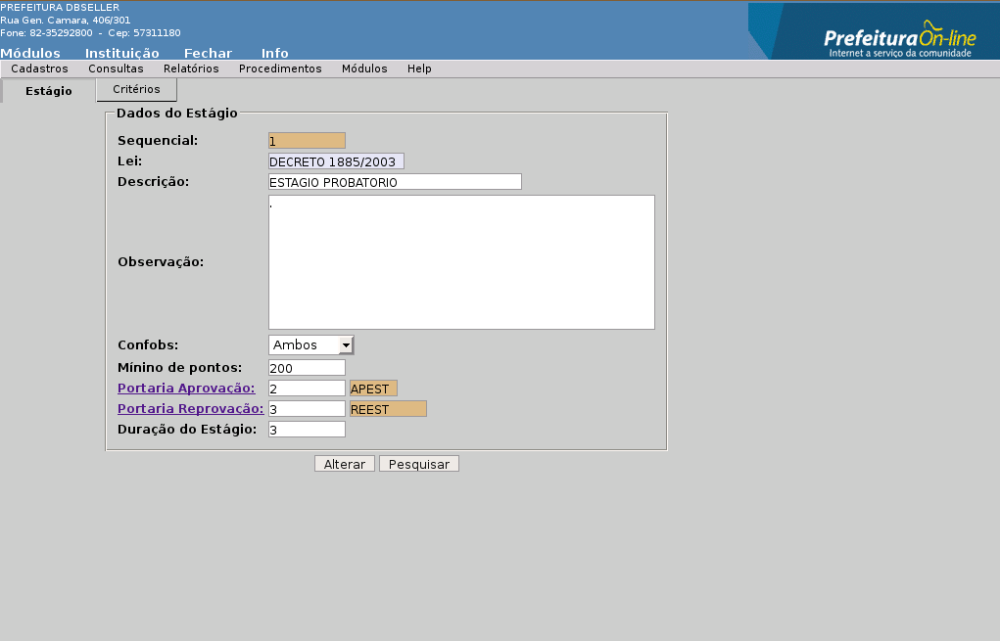
Aba Critérios
Local onde são cadastrados os critérios, também chamados de conceitos de avaliação do estágio probatório. Entende-se por critérios a nomenclatura que será dada à pontução:
Ex:
|
Péssimo |
0,00 |
|
Insuficiente |
2,50 |
|
Média |
5,00 |
|
Bom |
7,50 |
|
Excelente |
10,00 |
ou
|
Sempre |
4 |
|
Muitas Vezes |
3 |
|
Às Vezes |
2 |
|
Nunca |
1 |
Cód. Sequencial: Campo alimentado automaticamente pelo sistema;
Descrição: Descrição para o critério;
Pontos: Quantos pontos vale o critério.
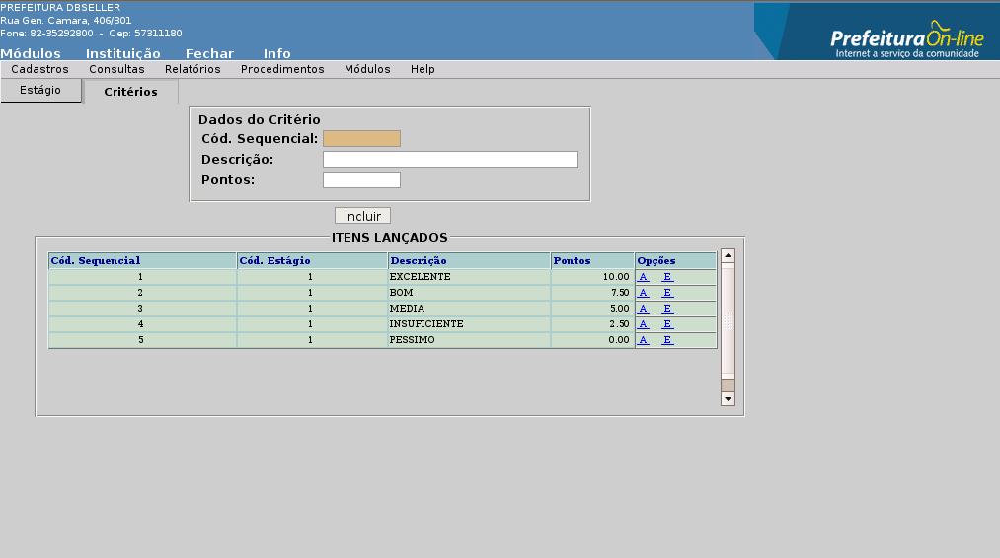
Pode-se alterar todos os campos da tela, com exceção do Sequencial.
Devemos tomar cuidado ao alterar o campo Mínimo de Pontos e Duração do Estágio, visto que se já houverem sido feitas agendas de estágio e/ou avaliações, as mesmas ficarão com os prazos de acordo com o que estava configurada na época em que foram feitos.
Aba Critérios
Pode-se alterar quaisquer dos critérios cadastrados. Mas se já houver sido apurado o resultado final de algum estágio, estes não sofrerão alteração, pois já foram finalizados.
Só poderá ser excluído o estágio probatório que não tiver sido informado para nenhum servidor.
Local onde são cadastradas as questões (perguntas) do estágio probatório, bem como onde as mesmas são vinculadas aos quesitos (assiduidade, responsabilidade, disciplina, iniciativa, produtividade).
Aba Perguntas
Cód. Sequencial: Campo preenchido automaticamente pelo sistema.
Cód. Quesito: Cadastro dos quesitos que serão avaliados.
Ex: assiduidade, responsabilidade, disciplina, iniciativa, produtividade.
Descrição: Descrição sobre o que será avaliado no quesito.
Ex: quesito: Produtividade
O que será avaliado: Considere até que ponto o avaliado é capaz de ser objetivo e abdicar das razões pessoais para atender os interesses profissionais do grupo.
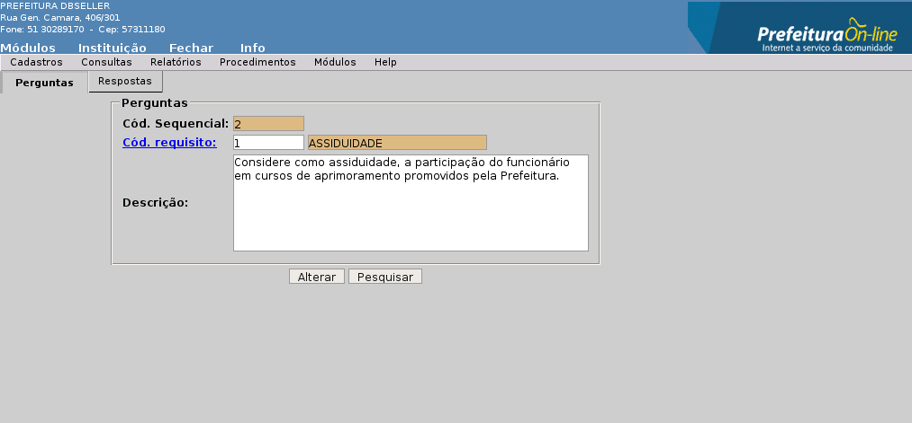
Aba Respostas
É neste local que cadastramos os critérios, e consequentemente a pontuação do mesmo e também as respostas que terão que ser escolhidas na hora de fazer a avaliação do servidor.
Cód. Sequencial: Campo preenchido automaticamente pelo sistema.
Cód. Critério: Número do critério que será vinculado a pergunta.
Descrição: Cadastro das possíveis respostas a pergunta feita no “Quesito” que será impressa no relatório para a avaliação, bem como no sistema quando for informada a avaliação.
ITENS LANÇADOS: Mostra todos os critérios cadastrados para o quesito, bem como as respostas ligadas ao mesmo.
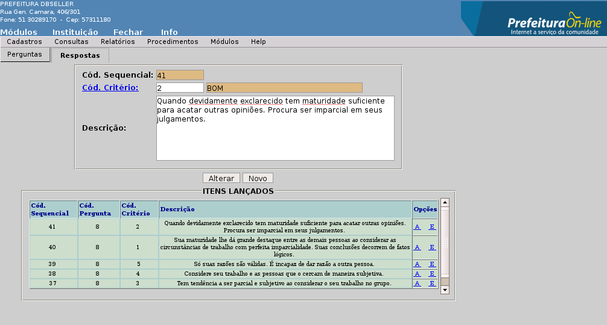
Pode ser alterado qualquer campo, excetuando os campos que são preenchidos automaticamente pelo sistema.
Pode ser excluído quaisquer registros, desde que não tenham sido utilizados em nenhuma avaliação.
Local onde é cadastro a periodicidade do estágio, ou seja, qual o número de avaliações e quando será feito cada uma delas. O cálculo da data das avaliações é feito a partir de uma data base, normalmente é a data de admissão, somando os meses cadastrados nesta rotina.
Aba Período
Cód. Sequencial: Campo preenchido automaticamente pelo sistema;
Cód. Estágio: Número do estágio probatório;
Descrição: Descrição do cadastro dos períodos.
Número de Avaliações: Número de avalições que terá o estágio probatório.
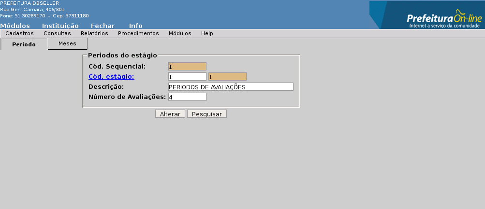
Aba Meses
Cadastro onde será descrito em quais os meses serão feitas as avalições.
Código do Período: Campo preenchido automaticamente pelo sistema;
Mês da Avaliação: Qual o mês da avalição. O número de itens deste cadastro não pode exceder ao número de avaliações cadastrada na “Aba Período”.
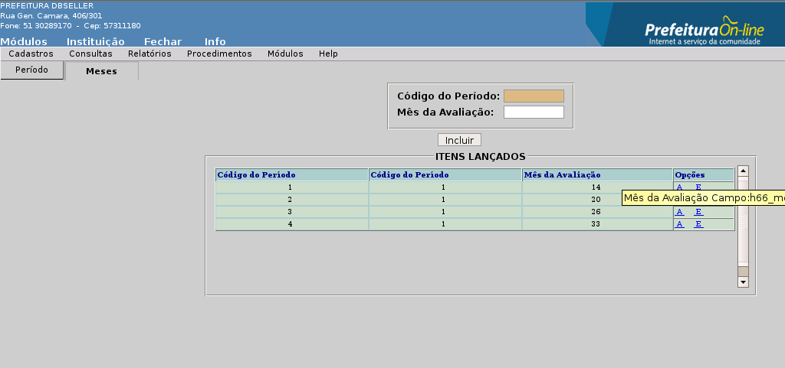
Só é aconselhado a alteração desde cadastro se ainda não houver sido feito nenhuma avaliação o utilizando.
Só pede ser excluído os cadastros que nunca tenham sido utilizados.
Cadastros dos quesitos, também chamados de critérios ou fatores de avaliação, que serão considerados para a avaliação da aptidão e capacidade do servidor nomeado para o cargo de provimento efetivo. Geralmente são: assiduidade, disciplina, capacidade de iniciativa, produtividade e responsabilidade.
Cód. Sequencial: Campo preenchido automaticamente pelo sistema;
Cód. Estágio: Número do estágio.
Descrição: Descrição para o quesito.
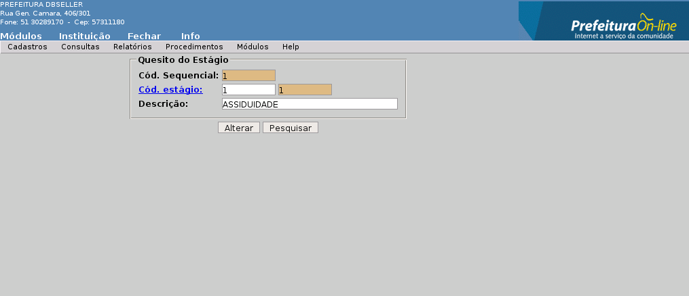
Pode-se alterar qualquer campo, com exceção do código sequancial.
Só pode ser excluído os cadastros que não houverem sido utilizados nos itens anteriores.
Local onde será cadastrada a comissão do estágio probatório, e tem como atribuições apreciar as avaliações do servidor, com base nos elementos informativos pertinentes à sua atuação funcional; julgar, em grau de recurso, a avaliação feita pela chefia servidor.
Aba Comissão
Cód. Sequencial: Campo preenchido automaticamente pelo sistema;
Data Inicial: Data de início das atividades da comissão de estágio probatório.
Data Final: Data do final das atividades da comissão de estágio probatório.
Descrição: Descrição da comissão.
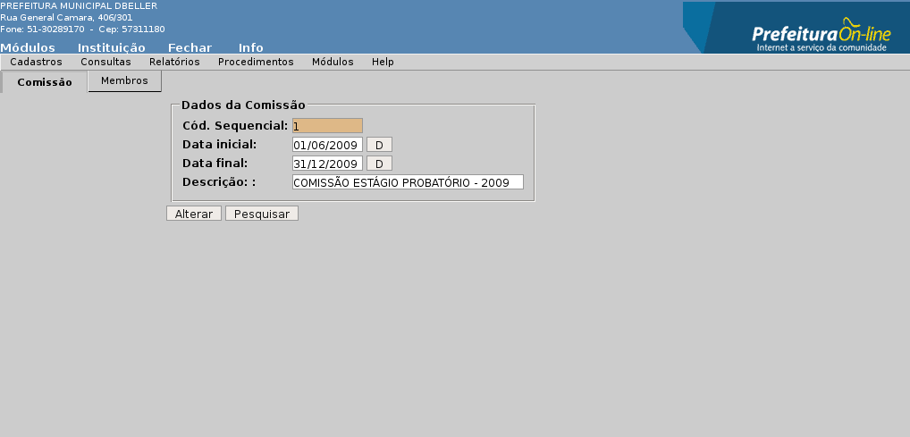
Aba Membros
Cadastro das pessoas que farão parte da comissão.
Cód. Sequencial: Campo preenchido automaticamente pelo sistema;
Registro: Matrícula do funcionário que fará parte da comissão;
Tipo: Qual o tipo de participação que terá na comissão (Presidente ou Membro).
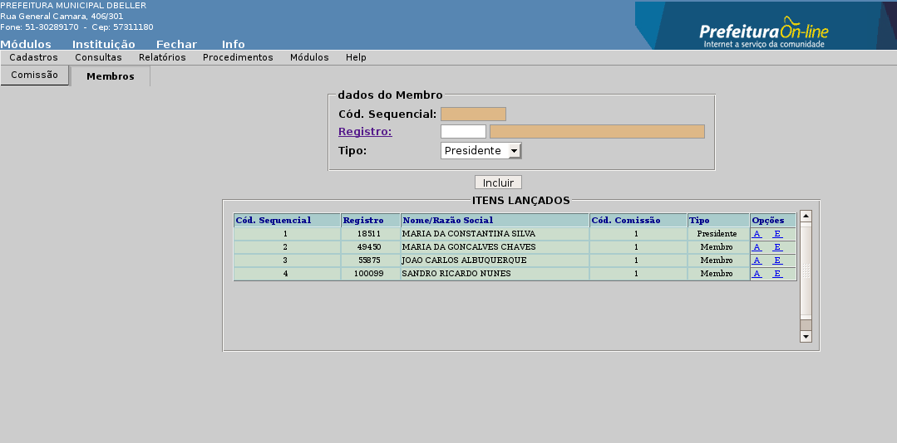
Aba Comissão
Pode ser alterado qualquer campo do cadastro com exceção do que é gerado automaticamento pelo sistema.
Aba Membros
Pode ser alterado, incluído ou excluído qualquer funcionário que faz parte da comissão.
Para fazer a troca do presidente da comissão, deve-se primeiro alterar o atual presidente para “membro” ou excluí-lo, e só então colocar outro como presidente.
Aba Comissão
Só podem ser excluídas as comissões que não estão como reponsáveis de nemhuma avaliação e que não tenham nenhum membro ligado a mesma.
Aba Membros
Tanto a alteração de membros como a sua exclusão, deverá ser feito no item “Alteração”.
Esta consulta tem como finalidade mostrar todos os funcionários que têm agenda de estágio protório, bem como a pontuação de todos os quesitos em todas as avaliações feitas.
Matrícula: Se informada a matrícula e clicar “Consultar”, o sistema mostrará as avaliações do funcionário escolhido.
Período: Neste campo é informado o período em que se quer consultar os funcionários que têm avaliações com data marcada entre o período escolhido. Este campo só terá validade se o campo “Matrícula” estiver em branco.
Filtro:
Todos - consulta todos os funcionários com avaliações no período.
Não Aplicadas - mostra somente os funcionários que têm avaliações em aberto;
Aplicadas – mostra somente os funcionários que têm avalições fechadas.
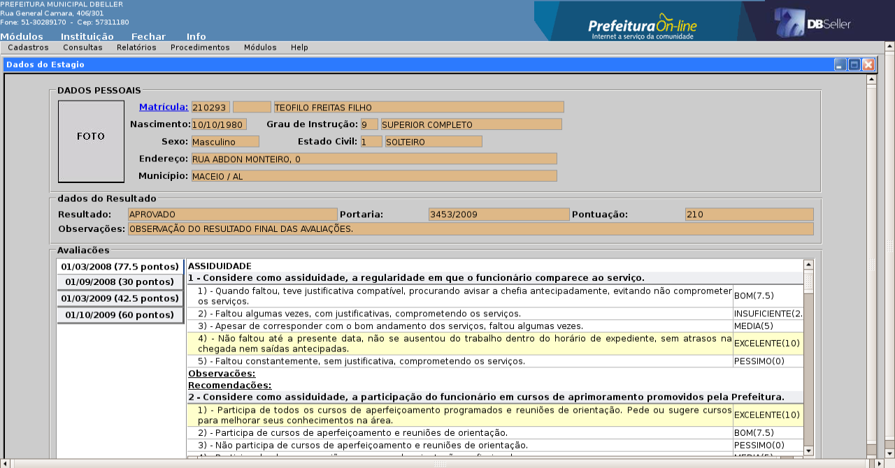
Este relatório tem o objetivo de fazer o acompanhamento do estágio do servidor, pois o mesmo mostra a pontuação de todos os quesitos por avaliação, trazendo o total da avalição, o total do quesito na avaliação e o total do quesito geral.
Matrícula: Matrícula do servidor que se quer consultar.
Período: Período das avaliações que se que consultar.
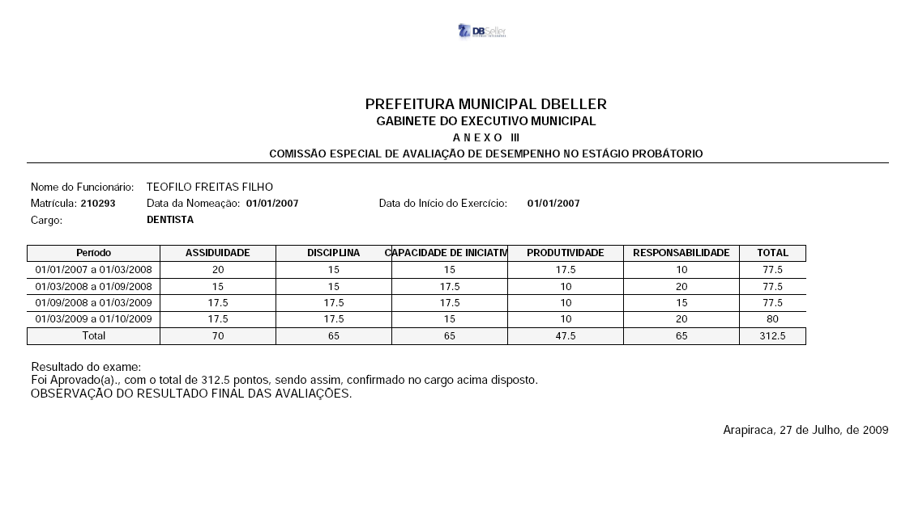
Relatório dos funcionários e seus períodos de avaliações, bem como a emissão dos questionários para a avalição no período.
Período: Intervalo entre as datas das avaliações que se quer listar;
Avaliações:
Todas: lista todas as avaliações do período;
Não aplicadas: lista somente as avaliações que ainda não foram feitas;
Aplicadas: lista somente as avaliações que já foram feitas.
Mostrar:
Lista Funcionários: lista somente o funcionários e as datas que serão feitas, ou que foram feitas no período escolhido, conforme a figura 12.
Lista Questionários: lista os quetionários com as questões a serem aplicadas na avalição do servidor, conforme a figura 16.
Ano / Mês: Mostra o período em que a folha de pagamento está trabalhando.
Tipo de Resumo:
Geral: imprime todos os funcionários em ordem alfabética;
Lotação: imprime todos os funcionários em ordem de lotação e alfabética dentro da lotação;
Órgão: imprime todos os funcionários em ordem de secretaria e alfabética dentro da secretaria;
Local de Trabalho: imprime os funcionário em ordem de local de tabalho e alfabética dentro do local de trabalho.
Tipo de Filtro: dependendo do Tipo de Resumo escolhido, mostrará na tela as opções abaixo:
Intervalo: pode-se filtrar por intervalo do tipo de resumo: ex: se no tipo de resumo foi escolhido Órgão, deve-se colocar o intervalo dos órgãos as serem emitidos.
Selecionados: escolhe-se qual, ou quais órgãos, lotações, locais de trabalho se quer emitir.
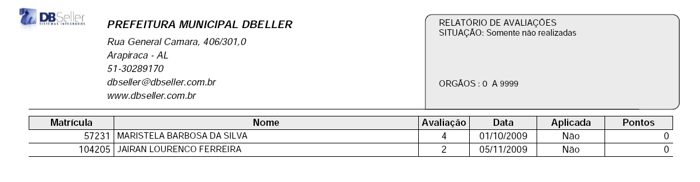
Figura 12
Local onde são criadas as agendas do estágio probatório, ou seja, é neste cadastro que é criado a data de cada avalição do servidor, a contar da data de admissão e levando em conta os meses em que será feito cada avaliação, meses estes que foram configurados em “Cadastros > Períodos do Estágio”.
Cód. Sequencial: Campo preenchido automaticamento pelo sistema.
Cód. Estágio: número do estágio probatório.
Cód. Registro: Matrícula do funcionário que será criado a agenda do estágio.
Admissão: Este campo é preenchido automaticamente com a data de admissão do funcionário, mas pode ser alterado da maneira que mais confir ao usuário. A agenda do estágio começará a contagem dos meses para a aplicação da avaliação a data informada neste campo.
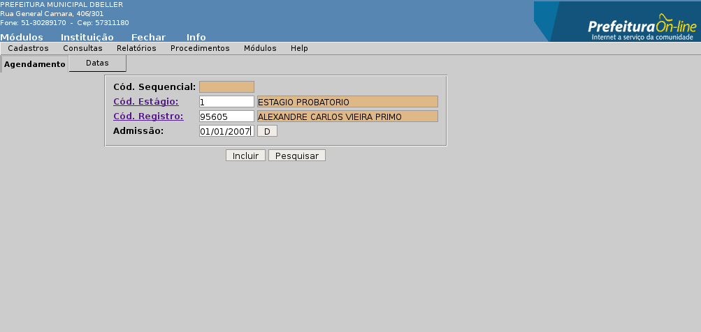
Aba Data
Esta “aba” é preenchida automaticamente quando clicar “Incluir” na “aba Agendamento”. Mas as datas dos agendamentos podem ser alterados a qualquer momento.
Cód. Sequencial: Campo preenchido automaticamento pelo sistema;
Data da Avaliação: Data em que deverá ser efetuada a avaliação;
Número da Avaliação: Número sequencial da avaliação.
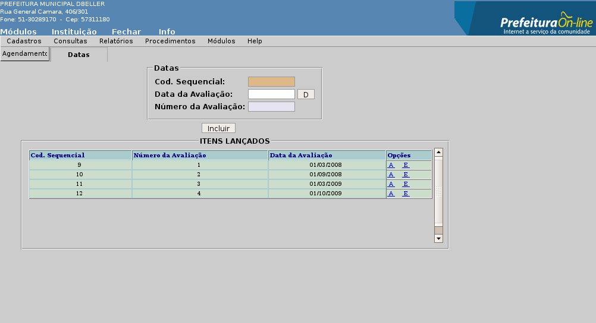
Nesta “aba” só podemos alterar a matrícula do servidor, visto que os campos Cód. Estágio e Admissão, só servem de base para a geração das datas das avaliações na “aba Datas”.
É neste local que é feito a alteração das datas de avaliações.
Se for excluída a agenda do servidor, excluirá junto todas as avaliações que por ventura tenham sido feitas.
Cadastro onde são informados os resultados da aplicação da avaliação do servidor. Ao entrar nesta opção o sistema mostrará todas as avaliações que tem agendamentos. Todas as que já foram feitas, aparecerá na parte esquerda da tela a situação “Aplicada ...” e todas em aberto ficará com a situação “Não Aplica ...”, basta clicar em uma agenda para selecioná-la.
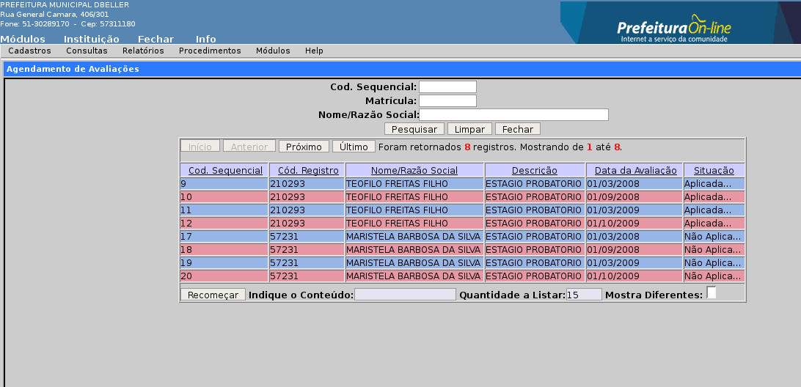
Cód. Comissão: Comissão responsável pela avalição;
Cód. Registro: Matrícula do Funcionário;
Data: Data da avaliação;
Avaliador: Pessoa que fez a avalição do servidor.
Botões:
Salvar Avaliação: Grava a avaliação no ponto que está no momento, ou seja, pode-se começar uma avaliação e não termina-lá, quando for escolhida a mesma avaliação, continuará do ponto onde parou.
Pesquisar: Clicando nesta opção, o usuário será levado novamente para a tela “Pesquisa Avaliações”.
Emitir Avaliação: Imprime o questionário da avaliação.
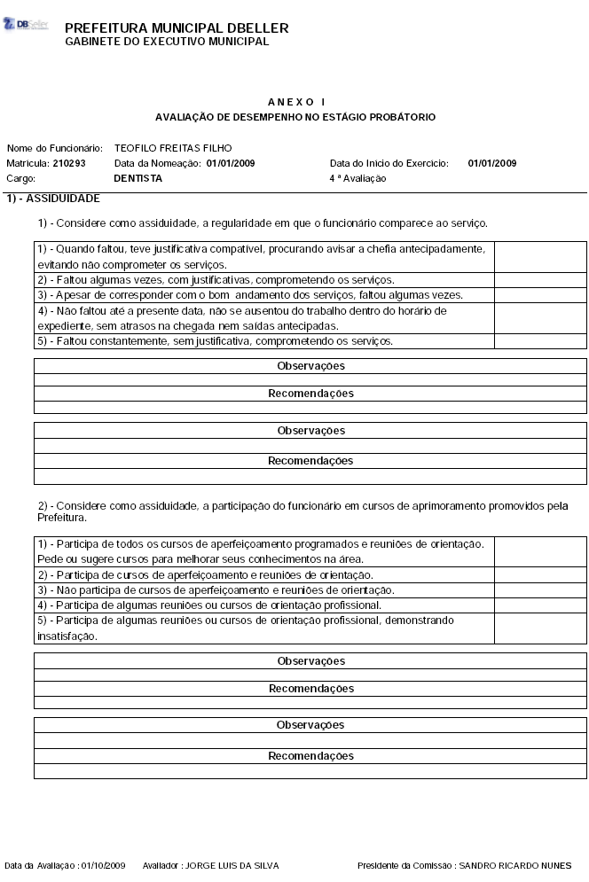
Quesito: Ao selecionar o quesito, o sistema mostrará as perguntas referentes ao mesmo, juntamente com as respostas a serem marcadas de acordo com o relatório da avaliação. Sempre que trocar de quesito, trocarão as perguntas e respostas que ficam abaixo da tela.
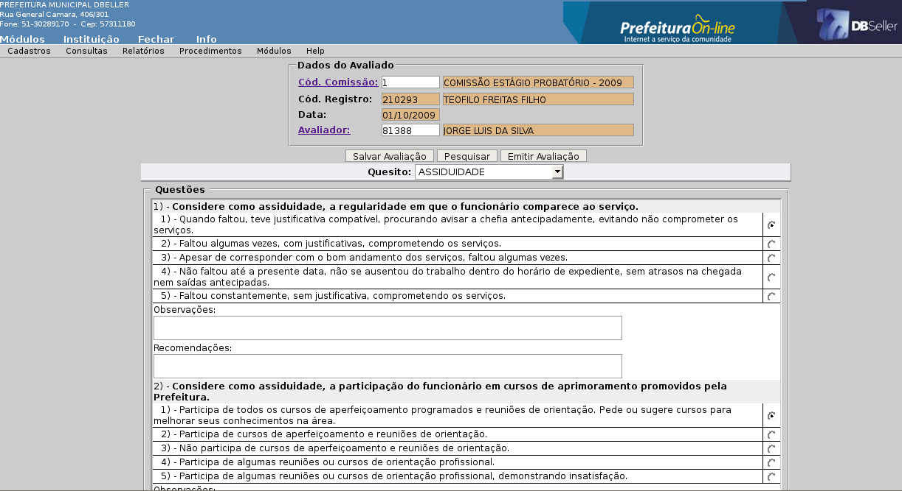
É nesta tela que é fechado o estágio probatório do servidor, aprovando ou reprovando o mesmo de acordo com a pontuação obtida. Só será mostrado na tela inicial deste menu os servidores em que todas as avalições foram concluídas.
Código do Resultado: Campo preenchido automaticamento pelo sistema.
Código do Estágio: Preenchido automaticamente pelo sistema com o número do agendamento do servidor, seguido de seu nome.
Data: Data da conclusão do estágio probatório.
Número da Portaria: Número da portaria que oficializa o fato.
Resultado: Será preenchido pelo sistema com base na soma dos pontos que o servidor teve durante o período do estágio e o número mínimo para passar que foi cadastrado para o estágio. Mesmo o sistema calculando se o servidor foi “Aprovado” ou “Reprovado”, o usuário tem a possibilidade de trocar o resultado.
Pontos Obtidos: Soma dos pontos obtidos nas avaliações.
Observações: Campo livre para o usuário colocar observações sobre a finalização da avalição.
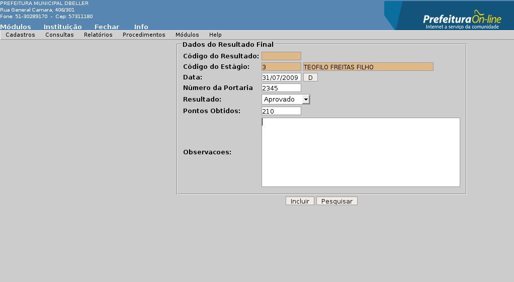
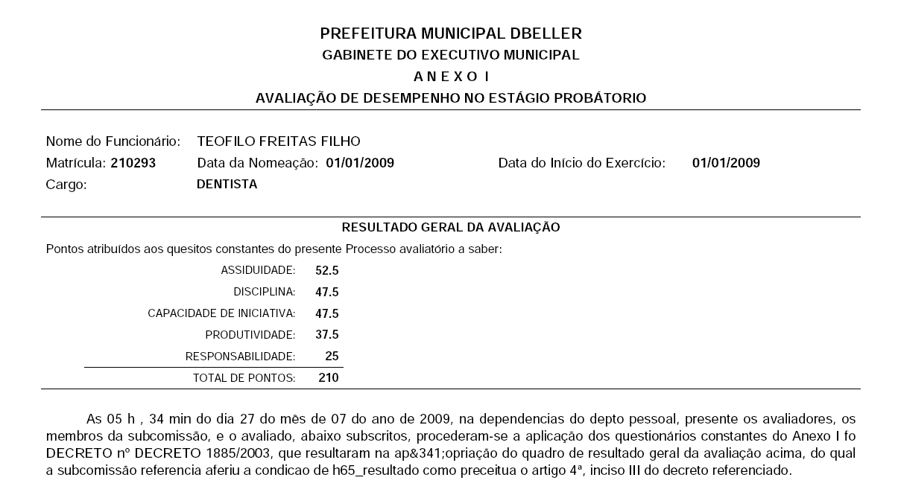
Podem ser alterados todos os campos da tela, com exceção daqueles gerados automaticamente pelo sistema.